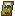
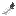
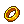
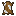
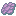

What is Gravestone Dungeons
This datapack adds many things, always missed in a medieval styled playthrough. I added a lot of small and large dungeons like "Dungeon Crawl" or "When Dungeons Arise" in all biomes and dimensions, which set a new challenge for the game. Every dungeon contains lootchests with custom loot, spawners with modified mobs and a unique boss, who drops special weapons, tools or items, which aren't craftable in vanilla. The weapons and items change attributes, spawn particle effects and give potioneffects, or have special abilities. Every weapon has a secondary attack which is used by charging it up. Either by time, hitting enemies, earning xp or charging it up by sneaking. Some may cost xp to use. The center of the datapack is the new added Direwood Keep, where you meet a lot of traders, which sell fun items or buy materials in exchange for gold or silver coins. These are the new currency to trade with all added traders in the game like Rogue Merchants, Cloud Nomads or various characters. I also added a few modified items, which can be reinforced by different methods. At Direwood Keep lives Monk Zaccarius, who sells the books, which desribes the way to reinforce these items. He also holds a few books with short descriptions about the new dungeons und structures in his library. Also there lives Eldrid, who sells maps, to locate the dungeons.
Structures
Characters
Bosses
- Challengers in the Arena
- The Witches of the Crystal Coven
- Grimgar the Ferocious Bugbear
- The Blighted Marrow
- The Blazing Devil
- Morbex the Voidwalker
Enemies
Each dungeon has its own set of modified mobs to face. They can be spawned via spawners and trial spawners. If ominous effect is applied, difficulty and loot quality will increase. Some mobs make use of custom enchantments, to use against players. DO NOT UNDERESTIMATE. This data pack is mid-late game. Without proper equipment, it’s not recommended to enter dungeons
Enchantments
| Name | Summary | Incompatable With | Max Level | Items |
|---|---|---|---|---|
| Adrenaline Boost | Uses Magika to summon a shard of a star that guides itself to the nearest enemy mob dealing 8  damage damage |
Spells | 1 | |
| Blackthorn Arrow | Summon a shard of a star that guides itself to the nearest enemy mob | Spells | 1 | |
| Bleeding | Summon a shard of a star that guides itself to the nearest enemy mob | Spells | 1 | |
| Bonecaller | Summon a shard of a star that guides itself to the nearest enemy mob | Spells | 1 | |
| Bounty Claim | Summon a shard of a star that guides itself to the nearest enemy mob | Spells | 1 | |
| Chorus Void | Summon a shard of a star that guides itself to the nearest enemy mob | Spells | 1 | |
| Cultivation | Summon a shard of a star that guides itself to the nearest enemy mob | Spells | 1 | |
| Deflect Projectiles | Summon a shard of a star that guides itself to the nearest enemy mob | Spells | 1 | |
| Disarming | Summon a shard of a star that guides itself to the nearest enemy mob | Spells | 1 | |
| Evoker Fangs | Summon a shard of a star that guides itself to the nearest enemy mob | Spells | 1 | |
| Experience Boost | Summon a shard of a star that guides itself to the nearest enemy mob | Spells | 1 | |
| Fire Burst | Summon a shard of a star that guides itself to the nearest enemy mob | Spells | 1 | |
| Floating | Summon a shard of a star that guides itself to the nearest enemy mob | Spells | 1 | |
| Frostbite | Summon a shard of a star that guides itself to the nearest enemy mob | Spells | 1 | |
| Greatblade Defence | Summon a shard of a star that guides itself to the nearest enemy mob | Spells | 1 | |
| Holy | Summon a shard of a star that guides itself to the nearest enemy mob | Spells | 1 | |
| Horse I | Summon a shard of a star that guides itself to the nearest enemy mob | Spells | 1 | |
| Horse II | Summon a shard of a star that guides itself to the nearest enemy mob | Spells | 1 | |
| Horse III | Summon a shard of a star that guides itself to the nearest enemy mob | Spells | 1 | |
| Illumination | Summon a shard of a star that guides itself to the nearest enemy mob | Spells | 1 | |
| Inner Echo | Summon a shard of a star that guides itself to the nearest enemy mob | Spells | 1 | |
| Knife Pouch | Summon a shard of a star that guides itself to the nearest enemy mob | Spells | 1 | |
| Levitation | Summon a shard of a star that guides itself to the nearest enemy mob | Spells | 1 | |
| Light Wave | Summon a shard of a star that guides itself to the nearest enemy mob | Spells | 1 | |
| Lightning Rod | Summon a shard of a star that guides itself to the nearest enemy mob | Spells | 1 | |
| Lightning Strike | Summon a shard of a star that guides itself to the nearest enemy mob | Spells | 1 | |
| Magma Walker | Summon a shard of a star that guides itself to the nearest enemy mob | Spells | 1 | |
| Mistbreaker | Summon a shard of a star that guides itself to the nearest enemy mob | Spells | 1 | |
| Molten Touch | Summon a shard of a star that guides itself to the nearest enemy mob | Spells | 1 | |
| Poisoning | Summon a shard of a star that guides itself to the nearest enemy mob | Spells | 1 | |
| Potion Bag | Summon a shard of a star that guides itself to the nearest enemy mob | Spells | 1 | |
| Quiver | Summon a shard of a star that guides itself to the nearest enemy mob | Spells | 1 | |
| Retaliation Pulse | Summon a shard of a star that guides itself to the nearest enemy mob | Spells | 1 | |
| Seaborn | Summon a shard of a star that guides itself to the nearest enemy mob | Spells | 1 | |
| Seppuku | Summon a shard of a star that guides itself to the nearest enemy mob | Spells | 1 | |
| Star Shard | Summon a shard of a star that guides itself to the nearest enemy mob | Spells | 1 | |
| Star Shower | Summon a shard of a star that guides itself to the nearest enemy mob | Spells | 1 | |
| Telekinesis | Summon a shard of a star that guides itself to the nearest enemy mob | Spells | 1 | |
| Tongue of Fire | Summon a shard of a star that guides itself to the nearest enemy mob | Spells | 1 | |
| Veil of Shadows | Summon a shard of a star that guides itself to the nearest enemy mob | Spells | 1 | |
| Void Sphere | Summon a shard of a star that guides itself to the nearest enemy mob | Spells | 1 | |
| Warpstrike | Summon a shard of a star that guides itself to the nearest enemy mob | Spells | 1 | |
| Withering | Summon a shard of a star that guides itself to the nearest enemy mob | Spells | 1 |
Runes
- Rune of Greater Health
- Rune of Magicka
- Rune of Lesser Fall Damage
- Rune of Higher Ranger
- Rune of Longer Breath
- Rune of Concinnity
Spells
- Emberfield Spell
- Icefield Spell
- Thunderfield Spell
- Forcefield Spell
- Teleportation Spell
Companions
- Frenzy Golem
- Sword Guardian
- Flame Spider
- Flame Atronach
- Dire Bear
- Dire Wolf
Arrows
- Amethyst Arrow
- Copper Arrow
- Iron Arrow
- Diamond Arrow
- Netherite Arrows
Basic
- Cursed Arrow
- Bonfire Arrow
- Fire Arrow
- Ender Arrow
- Freezing Arrow
- Lightning Arrow
- Transforming Arrow
- Hypnotizing Arrow
- Weaving Arrow
Special
Potions
- Potion of Luck
- Potion of Aqua Affinity
- Potion of Bull Strength
- Potion of Endurance
- Potion of Hardening
- Potion of Lightness
- Potion of Mining
- Potion of Charisma
- Lingering Potion of Despair
- Lingering Potion of Floating
- Lingering Potion of Invincibility
- Lingering Potion of Withering
Armor
Horse Equipment
Modifier
Currency
- silver

- gold

Artifacts
Crafting Recipes
Food
Trinkets
Enemy Drops
Drops from normal enemies from dungeons
- Family Portrait 
- sells for X silver
- Blackened Feather 
- sells for X silver
- Silver Ring
- sells for X silver
- Amulet

- sells for X silver
- Golden Ring 
- sells for X silver
Mob Drops
- Goathide

- Sells for X silver
- Drops from slain Goats
- Red Muchroom Leather
- sells for X silver
- Drops from slain Mooshroom Cows
- Brown Mushroom Leather 
- sells for X silver
- Drops from slain
- Fox Pelt

- sells for X silver
- Drops from slain
- White Fox Pelt

- sells for X silver
- Drops from slain
- Prime Phantom Membrane 
- sells for X silver
- Drops from slain
- Panda Pelt
- sells for X silver
- Drops from slain
- Sniffer Pelt

- sells for X silver
- Drops from slain
- Polar Bear Pelt
- sells for X silver
- Drops from slain
Contributors
Zacc || headbodyscript